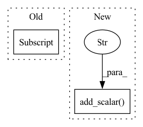

Pattern ID :33701
Before Change
imgs = plot_sequences(T_gt, R_pred, t_pred, self.seq_len)
for i in range(len(imgs)):
self.writer.add_image("val/" + self.sequences[i], imgs[i] )
After Change
self.writer.add_scalar("val/R_err_med", results[2])
self.writer.add_scalar("val/R_err_std", results[3])
self.writer.add_scalar("val/KITTI/t_err", t_err)
self.writer.add_scalar("val/KITTI/r_err" , r_err)
imgs = plot_sequences(T_gt, R_pred, t_pred, self.seq_len)
for i, img in enumerate(imgs):
self.writer.add_image("val/" + self.sequences[i], img)In pattern: SUPERPATTERN
Frequency: 5
Non-data size: 2
Instances Fragment ID: 96929463
Project Name: utiasasrl/hero_radar_odometry
Commit Name: 969c6a9ef08e0851f11237626a7bc76686d0dc2e
Time: 2020-11-19
Author: keenburn2004@gmail.com
File Name: utils/monitor.py
M Class Name: Monitor
N Class Name: Monitor
M Method Name: validation(1)
N Method Name: validation(1)
M Parent Class: object
N Parent Class: object
M File Name: utils/monitor.py
N File Name: utils/monitor.py
M Start Line: 100
M End Line: 102
N Start Line: 103
N End Line: 108
Before Change
// save reconstructed image
for i in range(b):
to_pil_image(pred[i] .cpu()).save(os.path.join(cur_valid_path, f"{name[i]}.png"))
torch.cuda.empty_cache()
for key, value in scores.items():After Change
for key, value in scores.items():
scores[key] = value / n_samples
writer.add_scalar("Eval/PSNR" , scores["psnr"], ep)
writer.add_scalar("Eval/SSIM", scores["ssim"], ep)
writer.add_scalar("Eval/MS-SSIM", scores["ms_ssim"], ep)
writer.add_scalar("Eval/LPIPS", scores["lpips"], ep)
writer.add_scalar("Eval/DISTS", scores["dists"], ep) Fragment ID: 96929462
Project Name: jhlew/softsplat-full
Commit Name: db2f42961dd2d9789269ba41ad4421653729ccfa
Time: 2022-11-07
Author: fudojhl@gmail.com
File Name: validation.py
M Class Name: AnonimousClass
N Class Name: AnonimousClass
M Method Name: validation(4)
N Method Name: validation(4)
M Parent Class:
N Parent Class:
M File Name: validation.py
N File Name: validation.py
M Start Line: 67
M End Line: 98
N Start Line: 65
N End Line: 101
Before Change
log_grid_image("Conf/conf_map_percl", conf_map_percl)
logger.add_histogram("Conf/conf_sigma_percl_hist", self.conf_sigma_percl[:,:1], total_iter)
log_grid_image("Conf/conf_map_percl_flip", conf_map_percl_flip)
logger.add_histogram("Conf/conf_sigma_percl_flip_hist", self.conf_sigma_percl[:,1:] , total_iter)
logger.add_video("Image_rotate/recon_rotate", canon_im_rotate_grid, total_iter, fps=4)
logger.add_video("Image_rotate/canon_normal_rotate", canon_normal_rotate_grid, total_iter, fps=4)After Change
logger.add_scalar("Loss/loss_l1_im_flip", self.loss_l1_im_flip, total_iter)
logger.add_scalar("Loss/loss_perc_im", self.loss_perc_im, total_iter)
logger.add_scalar("Loss/loss_perc_im_flip", self.loss_perc_im_flip, total_iter)
logger.add_scalar("Loss/loss_depth_sm" , self.loss_depth_sm, total_iter)
logger.add_histogram("Depth/canon_depth_raw_hist", canon_depth_raw_hist, total_iter)
vlist = ["view_rx", "view_ry", "view_rz", "view_tx", "view_ty", "view_tz"]
for i in range(self.view.shape[1]): Fragment ID: 96929461
Project Name: elliottwu/unsup3d
Commit Name: b9d16026e46e4890195410113ea73aeaa79f9c85
Time: 2021-08-30
Author: elliottwu@users.noreply.github.com
File Name: unsup3d/model.py
M Class Name: Unsup3D
N Class Name: Unsup3D
M Method Name: visualize(4)
N Method Name: visualize(4)
M Parent Class:
N Parent Class:
M File Name: unsup3d/model.py
N File Name: unsup3d/model.py
M Start Line: 240
M End Line: 295
N Start Line: 263
N End Line: 323
Before Change
dataset = load_dataset("text", data_files={"train": args.train_path,
"dev": args.dev_path})
print(dataset)
print(dataset["train"] )
convert_func = partial(convert_example,
tokenizer=tokenizer,
max_seq_len=args.max_seq_len,After Change
tokenizer.save_pretrained(os.path.join(cur_save_dir))
acc, precision, recall, f1, class_metrics = evaluate_model(model, metric, eval_dataloader, global_step)
writer.add_scalar("eval/acc" , acc, global_step)
writer.add_scalar("eval/precision", precision, global_step)
writer.add_scalar("eval/recall", recall, global_step)
writer.add_scalar("eval/f1", f1, global_step)
writer.record() Fragment ID: 96929471
Project Name: harderthenharder/transformers_tasks
Commit Name: c0b7aa4ec0eb6b145305c3b5c837b68bfeb40556
Time: 2022-11-19
Author: pankeyu@pankeyus-MacBook-Pro.local
File Name: prompt_tasks/p-tuning/p_tuning.py
M Class Name: AnonimousClass
N Class Name: AnonimousClass
M Method Name: train(0)
N Method Name: train(0)
M Parent Class:
N Parent Class:
M File Name: prompt_tasks/p-tuning/p_tuning.py
N File Name: prompt_tasks/p-tuning/p_tuning.py
M Start Line: 102
M End Line: 146
N Start Line: 146
N End Line: 203
Before Change
self.train_dataset.img_size = random.choice(range(10, 20)) * 32
if epoch >= 0 and cfg.TRAIN["DATA_TYPE"] == "VOC":
self.__save_model_weights(epoch, mloss[3] )
print("save weights done")
// mAP = 0
// if epoch >= 0:After Change
mAP += APs[i]
mAP = mAP / self.train_dataset.num_classes
print("mAP : {}".format(mAP))
writer.add_scalar("mAP" , mAP, epoch)
self.__save_model_weights(epoch, mAP)
print("save weights done")
logger.info(" ===test mAP:{:.3f}".format(mAP))
elif epoch >= 0 and cfg.TRAIN["DATA_TYPE"] == "COCO": Fragment ID: 96929470
Project Name: argusswift/yolov4-pytorch
Commit Name: 2e9ce6dbdb27a756a089d751b7a32e7d8b8a997f
Time: 2020-07-28
Author: your email
File Name: train.py
M Class Name: Trainer
N Class Name: Trainer
M Method Name: train(1)
N Method Name: train(1)
M Parent Class: object
N Parent Class: object
M File Name: train.py
N File Name: train.py
M Start Line: 116
M End Line: 168
N Start Line: 111
N End Line: 189